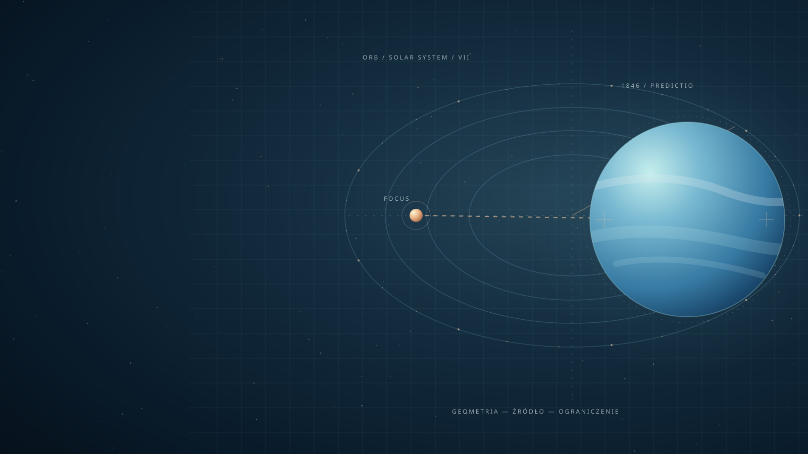

NAJWIĘKSZE ODKRYCIA CZĘSTO ZACZYNAJĄ SIĘ OD NIEZGODNOŚCI
Najpierw była liczba. Potem planeta.
Na nocnym niebie coś nie pasowało do obliczeń. Zamiast poprawić rysunek, astronomowie poprawili model świata. A potem znaleźli Neptuna. Oto opowieść o tym, dlaczego można zaufać nauce — właśnie dlatego, że pozwala sprawdzać swoje błędy.
SPRAWA: NIEWIDZIALNY ŚWIAT
Uran nie zachowywał się tak, jak powinien.
Znasz to uczucie, kiedy coś powinno znaleźć się dokładnie w jednym miejscu, ale za każdym razem widzisz to nieco gdzie indziej?
Astronomowie XIX wieku dysponowali prawami Newtona i wieloletnimi obserwacjami Urana. Jego ruch wykazywał jednak odchylenia od przewidywań. Może w rachunkach tkwił błąd? A może dalej, za Uranem, istniała jeszcze jedna planeta, której grawitacja zaburzała jego orbitę?
Urbain Le Verrier we Francji i John Couch Adams w Anglii niezależnie badali ten problem. Le Verrier podał przewidywany obszar nieba. W nocy z 23 na 24 września 1846 roku Johann Galle i Heinrich d’Arrest w berlińskim obserwatorium odnaleźli Neptuna około jednego stopnia od przewidzianej pozycji. Nieco wcześniej obiekt był już obserwowany, ale nie rozpoznano go jako nowej planety. [1, 2]
Ta historia nie mówi, że każda prognoza astronomów jest doskonała. Pokazuje coś znacznie ważniejszego: dobry model można skonfrontować ze światem i poprawić, kiedy świat mówi „nie”.
Najpierw wykryto różnicę między rachunkiem a obserwacją. Dopiero potem znaleziono nowy świat.
 NASA/JPL / VOYAGER 2 / PIA00046
NASA/JPL / VOYAGER 2 / PIA00046Rok 1846: punkt na mapie. Rok 1989: prawdziwa planeta.
143 lata po odkryciu sonda Voyager 2 przeleciała obok Neptuna, dostarczając zdjęć jego chmur i burz. Ten prawdziwy obraz tarczy powstał w sierpniu 1989 roku. NASA zaznacza, że zdjęcie poddano obróbce w celu uwidocznienia szczegółów atmosfery, kosztem części wierności kolorów.
To doskonały przykład różnicy między danymi obserwacyjnymi, przetworzonym obrazem i symulacją komputerową. Wszystkie trzy są użyteczne, ale nie wolno ich mylić. [3]
Oryginalne zdjęcie NASA/JPL, Voyager 2, seria PIA00046. To nie jest wygenerowana ilustracja.Zanim planeta pojawi się na ekranie, przechodzi przez pięć etapów.
W ATLAS SOLARIS nie ma jednego magicznego „wyświetl planetę”. Istnieje łańcuch od danych źródłowych, przez obliczenia i założenia, aż po obraz dla człowieka. Każde ogniwo odpowiada na inne pytanie.
Obserwacja
Fotografia, odczyt teleskopu lub precyzyjny pomiar odległości. Obserwacja też wymaga kalibracji i oceny niepewności.
Dane
Współrzędne, czas, jednostki, masy i parametry orbit. Bez jednoznacznych definicji można obliczyć coś zupełnie innego niż zamierzono.
Model
Równania Keplera, grawitacja, orientacja osi i układy odniesienia. Model jest świadomym uproszczeniem, a nie całą przyrodą.
Obliczenie
Pozycję wylicza się dla konkretnego czasu i układu współrzędnych. W tym momencie istotne stają się także zaokrąglenia i przybliżenia.
Wizualizacja
Kolor, kamera, powiększenie planet i tekstury mają uczynić astronomię zrozumiałą. Nie wszystkie są danymi pomiarowymi.
Dokładność fizyczna mówi, jak blisko prawdy znajduje się wynik. Precyzja zapisu mówi, ile cyfr pokazano. Dziesięć miejsc po przecinku nie zamienia uproszczonego modelu w precyzyjną efemerydę.
To nie są zgadywane orbity. Ale nie są też pełnymi efemerydami.
Główny silnik Atlasu korzysta z tabeli 1 opracowania NASA/JPL Solar System Dynamics — Approximate Positions of the Planets, przygotowanej dla przedziału 1800–2050. Dla każdej planety tabela podaje elementy orbity i ich powolne zmiany; na tej podstawie silnik rozwiązuje iteracyjnie równanie Keplera i wylicza położenie geometryczne. JPL podaje również typowe rozbieżności własnej aproksymacji. [4]
| Obiekt | Odchylenie długości heliocentrycznej | Odchylenie odległości od Słońca |
|---|---|---|
| Merkury | 15″ | 1 tys. km |
| Mars | 40″ | 25 tys. km |
| Jowisz | 400″ | 600 tys. km |
| Saturn | 600″ | 1 500 tys. km |
| Neptun | 10″ | 200 tys. km |
Ważne: to wartości nominalne opublikowane przez JPL dla konkretnej metody i układu heliocentrycznego, a nie uniwersalne przedziały błędów. Nie opisują całkowitego błędu obrazu widzianego z Ziemi, wpływu Księżyca ani wszystkich dodatkowych uproszczeń Atlasu.
Zapis ″ oznacza sekundę łuku (1/3600 stopnia). „25 tys. km” to 25 tysięcy kilometrów, a nie 25 kilometrów.
Jeżeli potrzebujesz dokładnego położenia do obserwacji naukowych lub nawigacji, zamiast uproszczonej tabeli należy użyć właściwego rozwiązania, np. JPL Horizons z odpowiednim czasem, obserwatorem, układem odniesienia i poprawkami. [5]
Okrąg jest prosty. Przyroda wybiera elipsy.
Zmień mimośród e. Jeśli e = 0, orbita jest kołem. Wraz ze wzrostem mimośrodu powstaje coraz bardziej wydłużona elipsa. Słońce znajduje się w jednym z jej ognisk, a nie w geometrycznym środku. To zaledwie jeden z parametrów prawdziwego modelu Keplera.
M = E − e sin E
Równanie Keplera wiąże anomalię średnią M z mimośrodem e i anomalią mimośrodową E. Sam kształt orbity nie wystarcza do ustalenia położenia planety w czasie — potrzebujemy również epoki i pozostałych elementów orbitalnych. [4]
Na ekranie wszystko jest „teraz”. Światło nigdy nie jest natychmiast.
Jeden z ważnych podziałów w astronomii dotyczy położenia geometrycznego i położenia obserwowanego. Światło potrzebuje czasu, aby dotrzeć od obiektu do obserwatora. Jeżeli obiekt się porusza, kierunek, z którego widzimy jego światło, może różnić się od jego geometrycznej pozycji „w tej chwili”. JPL Horizons potrafi uwzględniać tę i inne poprawki. [5, 6]
Stałe z NASA/JPL: 1 au = 149 597 870 700 m, c = 299 792 458 m/s, stąd czas lotu na odległość jednej au wynosi dokładnie około 499,0048 s. Stała prędkość światła w próżni jest zdefiniowana dokładnie; wynik czasowy zaokrąglamy do czytelnej postaci. Odległość Ziemia–Słońce nie jest zawsze równa dokładnie 1 au, a dystans Ziemia–Księżyc zmienia się podczas obiegu. [7]
To, co Atlas potrafi, jest fascynujące. To, czego nie potrafi, musi być jawne.
Przyjrzałem się obecnemu silnikowi js/app.js i zapisowi metody w oryginalnym laboratorium etapu 07. Poniższa karta opisuje rzeczywiste przybliżenia tej wersji Atlasu, a nie hipotetyczne możliwości silnika NASA.
Dobre do poznawania orbit.
Podstawą planet jest tabela NASA/JPL 1800–2050 oraz równanie Keplera. To pozycje geometryczne, nie kompletna efemeryda obserwacyjna z poprawkami na czas lotu światła, aberrację i refrakcję.
MODEL / PRZYBLIŻENIERuch jest bardziej złożony niż jedna elipsa.
Atlas koryguje położenie Ziemi względem barycentrum i używa przybliżonej teorii Księżyca. Dla wybranych geometrii zaćmień 2024–2040 wykorzystuje dodatkowe dane Słońca i Księżyca próbkowane co 6 godzin z interpolacją.
MODEL / PRZYBLIŻENIE I DODATKOWE DANEDuża planeta nie znaczy bliska planeta.
W typowym widoku rozmiary planet są celowo powiększone dla czytelności. Niektóre odległości w widokach zbliżeniowych również bywają zmienione. Rzeczywistych wymiarów szukaj w danych liczbowych lub odpowiednio oznaczonym trybie skali.
WIZUALIZACJA / NIE POMIARNie każda powierzchnia pochodzi z teleskopu.
Podstawowa mapa Ziemi wywodzi się z NASA Blue Marble Next Generation; jest kompozycją statyczną, nie pogodą na żywo. Część innych planet ma ilustracyjne tekstury proceduralne. Model horyzontu nie uwzględnia wiernie lokalnego terenu.
DANE + ILUSTRACJA / WYRAŹNIE ROZDZIELONEplanowania rzeczywistych manewrów sond, określania dokładnych kontaktów zaćmień, nawigacji, bezpiecznego obserwowania Słońca lub wyznaczania precyzyjnych efemeryd. W takich przypadkach korzystaj z wyspecjalizowanych danych i procedur, między innymi JPL Horizons.
Najpiękniejsza część astronomii? Możesz nie uwierzyć na słowo.
Możesz zmierzyć, skąd wychodzi Słońce. Możesz porównać obliczoną pozycję planety z niezależną efemerydą. Możesz podać dokładną datę, miejsce obserwacji i definicję użytego czasu. Możesz sprawdzić, czy poprawienie modelu zbliżyło go do obserwacji.
Tak działa dobra nauka: nie chroni modelu przed błędem. Używa błędu, by odkrywać więcej.